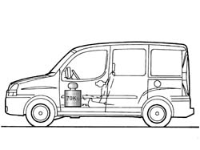
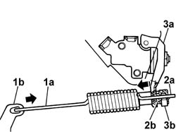

3330C62 LOAD PROPORTIONING VALVE CONTROL (ONE) LEFT OR RIGHT - CHECK AND ADJUST
- Path
- Procedures > 33 BRAKES > 3330 HYDRAULIC BRAKE SYSTEM > 3330C BRAKE PUMP, RESERVOIR AND LOAD PROPORTIONING VALVE > 3330C62 LOAD PROPORTIONING VALVE CONTROL (ONE) LEFT OR RIGHT - CHECK AND ADJUST
- Kind
- repair procedure (removal / refitting; the operation number is the code)
- Applies to
- engines: 1.4 8v, 1.6 16v, 1.3 JTD 16V, 1.9 JTD 8V; all production periods
- Interactive page
- https://sloeber94.github.io/elrnDB-fDbl/en/#/2584664
Applies to: engines: 1.4 8v, 1.6 16v, 1.3 JTD 16V, 1.9 JTD 8V; all production periods
1. The load proportioning valve must be adjusted with car wheels fitetd and resting on the ground, fuel tank full and a 70 kg load arranged on the car floor in the area in front of the driver's seat.

Applies to: engines: 1.4 8v, 1.6 16v, 1.3 JTD 16V, 1.9 JTD 8V; all production periods
Adjust the load proportioning valve when the regulation device detent screw has been backed off and traction spring travel has changed as a result.
Proceed as follows:
1. Attach eye (1a) of the traction spring into the hole on bracket (1b) located on the rear axle.
2. Insert the other end (2a) of the traction spring into the hole on regulation device (2b).
3. Move the lever of load proportioning valve (3a) fully forward (as indicated by the arrow) and move the traction spring back so it is in tension on the bracket; in this position, tighten regulation device detent screw (3b) to a torque of 1.23 0.28 daNm.
